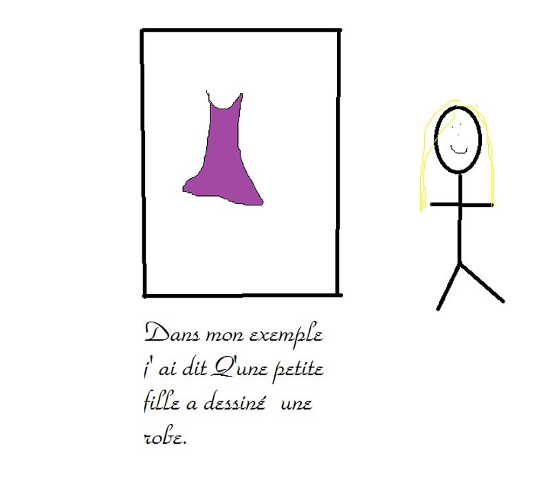

Rubrique Art

L'Art avec Dimitri Article réalisé par Nina et Emma Les enfants aiment l'art parce que l'art n'est pas que du dessin, mais aussi de la concentration. Les enfants ne s'en lassent pas enfin presque !Il faut se concentrer sinon cela ne sera pas très beau ! Pour faire de l'art, il ne faut que des pinceaux, il faut d'autres choses comme des fuseaux et des crayons de couleur, des feutres et surtout de l'imagination L'art, ce n'est pas seulement des tableaux cela peut-être : une fille qui a dessiné une robe. 
Dimitri pour une séance de dessin animé 
Le groupe en plein travail 
Un beau sourire de groupe INTERVIEWS (Les interviews vidéo ne sont plus disponibles) Interview par Nina Interview par Emma 
|